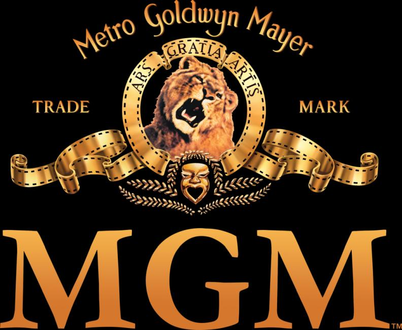

Metro-Goldwyn-Mayer Studios Inc. is an American media company, involved primarily in the production and distribution of feature films and television programs. One of the world's oldest film studios, MGM's corporate headquarters are located at 245 North Beverly Drive in Beverly Hills, California.
MGM was founded in 1924 when the entertainment entrepreneur Marcus Loew gained control of Metro Pictures, Goldwyn Pictures, and Louis B. Mayer Pictures.
In 1971, it was announced that MGM was to merge with 20th Century Fox, but the plan never came to fruition. Over the next 39 years, the studio was bought and sold at various points in its history until, on November 3, 2010, MGM filed for Chapter 11 bankruptcy. MGM emerged from bankruptcy on December 20, 2010, at which time the executives of Spyglass Entertainment, Gary Barber and Roger Birnbaum, became co-chairmen and co-CEOs of the holding company of Metro-Goldwyn-Mayer. As of 2017, MGM co-produces, co-finances, and co-distributes a majority of its films with Sony Pictures, Paramount Pictures and Warner Bros.
MGM Resorts International, a Las Vegas-based hotel and casino company listed on the New York Stock Exchange under the symbol "MGM", was created in 1973 as a division of Metro-Goldwyn-Mayer. The company was spun out in 1979, with the studio's then owner Kirk Kerkorian maintaining a large share, but it ended all affiliation with Metro-Goldwyn-Mayer in 1986.
Films
1408 (2007)
2010 (1984)
...All the Marbles (1981)
...tick...tick...tick... (1970)
2 Days in the Valley (1996)
20 Mule Team (1940)
2001: A Space Odyssey (1968)
3 Godfathers (1948)
3 Men in White (1944)
3 Strikes (2000)
36 Hours (1965)
6,000 Enemies (1939)
7 Faces of Dr. Lao (1964)
7 Women (1966)
9½ Weeks (1986)
A Certain Young Man (1928)
A Christmas Carol (1938)
A Christmas Story (1983)
A Date with Judy (1948)
A Day at the Races (1937)
A Dry White Season (1989)
A Family Affair (1937)
A Fish Called Wanda (1988)
A Free Soul (1931)
A Global Affair (1964)
A Guy Named Joe (1943)
A Guy Thing (2003)
A Lady of Chance (1928)
A Lady to Love (1930)
A Lady Without Passport (1950)
A Lady's Morals (1930)
A Letter for Evie (1946)
A Life of Her Own (1950)
A Little Journey (1927)
A Man Called Dagger (1905)
A Man, a Horse, a Gun (1968)
A Man's Man (1929)
A Matter of WHO (1962)
A Monkey in Winter (1963)
A Night at the Opera (1935)
A Patch of Blue (1965)
A Place for Lovers (1969)
A Single Man (1929)
A Slave of Fashion (1925)
A Slight Case of Larceny (1953)
A Southern Yankee (1948)
A Star Is Born (2018)
A Stranger in Town (1943)
A Stranger in Town (1968)
A Stranger Is Watching (1982)
A Tailor Made Man (1931)
A Tale of Two Cities (1935)
A Thunder of Drums (1961)
A Ticklish Affair (1963)
A Time to Sing (1968)
A Very Private Affair (1962)
A View to a Kill (1985)
A Waltz Dream (1926)
A Wicked Woman (1934)
A Woman of Affairs (1928)
A Woman's Face (1941)
A Yank at Eton (1942)
A Yank at Oxford (1938)
A Yank on the Burma Road (1942)
Abbott and Costello in Hollywood (1945)
Above and Beyond (1953)
Above Suspicion (1943)
Absolute Quiet (1936)
Across the Wide Missouri (1951)
Across to Singapore (1928)
Act of Violence (1948)
Action of the Tiger (1957)
Ada (1961)
Adam and Evil (1927)
Adam's Rib (1949)
Advance to the Rear(1964)
Adventure (1945)
After Midnight (1927)
After Midnight (1989)
After Office Hours (1935)
After the Thin Man (1936)
Age of Indiscretion (1935)
Agent Cody Banks (2003)
Agent Cody Banks 2: Destination London (2004)
Ah, Wilderness! (1935)
Air Raid Wardens (1943)
Aldebaran (1937)
Alex in Wonderland (1970)
Alfred the Great (1969)
Alias a Gentleman (1948)
Alias Jimmy Valentine (1928)
All American Chump (1936)
All at Sea(1929)
All at Sea (1957)
All Dogs Go to Heaven (1989)
All Dogs Go to Heaven 2 (1996)
All Fall Down (1962)
All the Brothers Were Valiant (1953)
All the Fine Young Cannibals (1960)
Along Came Ruth (1924)
Altars of Desire (1927)
Ambush (1950)
An American in Paris (1951)
An American Romance (1944)
Anchors Aweigh (1945)
And One Was Beautiful (1940)
Andy Hardy Comes Home (1958)
Andy Hardy Gets Spring Fever (1939)
Andy Hardy Meets Debutante (1940)
Andy Hardy's Blonde Trouble (1944)
Andy Hardy's Double Life (1943)
Andy Hardy's Private Secretary (1941)
Angels in the Outfield (1951)
Anna Christie (1930)
Anna Christie (1931)
Anna Karenina (1935)
Annie Get Your Gun (1950)
Annie Laurie (1927)
Another Language (1933)
Another Thin Man (1939)
Antitrust (2001)
Any Number Can Play (1949)
Any Number Can Win (1963)
Apache Trail (1942)
Apache War Smoke (1952)
April Blossoms/April Romance (1937)
Are You Listening (1932)
Arena (1953)
Around the World Under the Sea (1966)
Arsene Lupin (1932)
Arsène Lupin Returns (1938)
Arthur and the Invisibles (2007)
Arturo's Island (1962)
As You Desire Me (1932)
Ask a Policeman(1939)
Ask Any Girl (1959)
Assignment in Brittany (1943)
At First Sight (1999)
At the Circus (1939)
Athena (1954)
Atlantis, the Lost Continent (1961)
Autumn in New York (2000)
Awake (2007)
B.F.'s Daughter (1948)
Babes in Arms (1939)
Babes in Toyland (1934)
Babes on Broadway (1941)
Baby Boom (film) (1987)
Baby Face Harrington (1935)
Baby Mine (1928)
Bachelor in Paradise (1961)
Bad Bascomb(1946)
Bad Day at Black Rock (1955)
Bad Guy (1937)
Bad Little Angel (1939)
Balalaika (1939)
Bandits (2001)
Bannerline (1951)
Barbary Coast Gent (1944)
Barbershop (2002)
Barbershop 2: Back in Business (2004)
Barbershop: The Next Cut (2016)
Bardelys the Magnificent (1926)
Barnacle Bill (1941)
Basic Instinct 2 (2006)
Bataan (1943)
Bathing Beauty (1944)
Battle Beneath the Earth (1968)
Battle Circus (1953)
Battleground (1949)
Battling Butler (1926)
Be Cool (2005)
Beau Broadway (1928)
Beau Brummell (1954)
Beauty for Sale (1933)
Beauty Shop (2005)
Because You're Mine (1952)
Becky (1927)
Bedevilled (1955)
Beg, Borrow or Steal (1937)
Believe in Me (1971)
Bells Are Ringing (1960)
Ben-Hur (1925)
Ben-Hur (1959)
Ben-Hur (2016)
Benny & Joon (1993)
Best Foot Forward (1943)
Betrayed (1954)
Between Two Women (1937)
Between Two Women (1945)
Beverly of Graustark (1926)
Bewitched (1945)
Beyond the Sierras (1928)
Bhowani Junction (1956)
Big City (1937)
Big City (1948)
Big Jack (1949)
Big Leaguer (1953)
Bigger Than the Sky (2005)
Billy Rose's Jumbo (1962)
Billy the Kid (1930)
Billy the Kid (1941)
Bio-Dome (1996)
Biography of a Bachelor Girl (1935)
Bitter Sweet (1940)
Black Belly of the Tarantula (1972)
Black Fox: The Rise and Fall of Adolf Hitler (1963)
Black Hand (1950)
Blackboard Jungle (1955)
Blackmail (1939)
Blarney (1926)
Block-Heads (1938)
Blonde Fever (1944)
Blonde Inspiration (1941)
Blondie of the Follies (1932)
Blood and Chocolate (2007)
Blossoms in the Dust (1941)
Blown Away (1994)
Blowup (1966)
Blue Steel (1990)
Blueberry Hill (1988)
Bobby (2006)
Body and Soul (1927)
Body of Evidence (1993)
Bombshell (1933)
Bonnie Scotland(1935)
Boom Town (1940)
Border Incident (1949)
Born to Dance (1936)
Born to Sing (1942)
Bowling for Columbine (2002)
Boys' Night Out (1962)
Boys' Ranch (1946)
Boys Town (1938)
Brainstorm (1983)
Brass Target (1978)
Bread (1924)
Breakin' (1984)
Breaking and Entering (2007)
Brewster McCloud (1970)
Bridal Suite (1939)
Bridge to the Sun (1961)
Brigadoon (1954)
Bright Lights (1925)
Bright Road (1953)
Bringing Up Father (1928)
Broadway Melody of 1936 (1935)
Broadway Melody of 1938 (1937)
Broadway Melody of 1940 (1940)
Broadway Rhythm (1944)
Broadway Serenade (1939)
Broadway to Hollywood (1933)
Broken Barriers (1924)
Brotherly Love (1928)
Brotherly Love (1970)
Brown of Harvard (1926)
Buddy Buddy (1981)
Bulletproof Monk (2003)
Burn 'Em Up O'Connor (1939)
But the Flesh Is Weak (1932)
BUtterfield 8 (1960)
Buttons (1927)
Cabin in the Sky (1943)
Cairo (1942)
Cairo (1963)
California (1927)
Call of the Flesh (1930)
Callaway Went Thataway (1951)
Calling Bulldog Drummond (1951)
Calling Dr. Gillespie (1942)
Calling Dr. Kildare(1939)
Calm Yourself (1935)
Camille (1936)
Cannery Row (1982)
Captain Nemo and the Underwater City (1970)
Captain Salvation (1927)
Captain Sindbad (1963)
Captains Courageous (1937)
Carbine Williams (1952)
Carrie (2013)
Casanova/The Loves of Casanova (1929)
Casino Royale (2006)
Cass Timberlane (1947)
Cat on a Hot Tin Roof (1958)
Catlow (1971)
Cat's Eye (1985)
Cattle King (1963)
Caught (1949)
Caught Short (1930)
Cause for Alarm! (1951)
Chained (1934)
Challenge to Lassie (1949)
Chandler (1971)
Charlie Bartlett (2008)
Chasing Rainbows (1930)
Cheaper to Marry (1925)
Cheri-Bibi (1931)
Children of Pleasure (1930)
Children of the Damned (1964)
Child's Play (1988)
China Bound (1929)
China Seas (1935)
Christopher Bean (1933)
Chu-Chin-Chow (1925)
Cimarron (1960)
Circe, the Enchantress (1924)
Circus Rookies (1928)
City Rhythms (1989)
Clarence, the Cross-Eyed Lion (1965)
Clash of the Titans (1981)
Clay Pigeon (1971)
Clean Slate (1994)
Clear All Wires! (1933)
Clerks II (2006)
Code Name: Emerald (1985)
Code Two (1953)
College (2008)
Coma (1978)
Come Fly with Me (1963)
Come Live with Me (1941)
Command Decision (1948)
Company Business (1991)
Comrade X (1940)
Confession (1929)
Confessions of a Queen (1925)
Confidentially Connie (1953)
Congo Maisie (1940)
Conquest (1937)
Conspirator (1950)
Cool Breeze (1972)
Copying Beethoven (2006)
Corky (1972)
Corridors of Blood (1963)
Corvette Summer (1978)
Count Your Blessings (1959)
Courage of Lassie (1946)
Creed (2015)
Creed II (2018)
Crest of the Wave (1954)
Crisis (1950)
CrissCross (1992)
Crooked Hearts (1991)
Crossroads (1942)
Cry "Havoc" (1943)
Cry of the Hunted (1953)
Cry Terror! (1958)
Curse of the Pink Panther (1983)
Cutthroat Island (1995)
Cynthia (1947)
Daddy's Dyin': Who's Got the Will? (1990)
Daddy's Gone A-Hunting (1925)
Damon and Pythias (1962)
Dance Madness (1926)
Dance, Fools, Dance (1931)
Dancing Co-Ed (1939)
Dancing Lady (1933)
Dangerous Game (1993)
Dangerous Number (1937)
Dangerous Partners (1945)
Dangerous When Wet (1953)
Dark Delusion (1947)
Dark of the Sun (1968)
David Copperfield (1935)
Day of Reckoning (1933)
Day of the Evil Gun (1968)
Daybreak (1931)
De frente, marchen (1931)
Dead of Winter (1987)
Deadly China Doll (1973)
Deaf Smith & Johnny Ears (1973)
Deal (2008)
Death at a Funeral (2007)
Death on the Diamond (1934)
Death Warrant (1990)
Death Wish (2018)
Deceiver (1998)
Decision Against Time (1957)
Deep in My Heart (1954)
Delirious (1991)
De-Lovely (2004)
Delta Force 2: The Colombian Connection (1990)
Demon Seed (1977)
Desert Nights (1929)
Design for Scandal (1941)
Designing Woman (1957)
Desire Me (1947)
Desperate Hours (1990)
Desperate Search (1952)
Detectives (1928)
Detroit (2017)
Devil-May-Care (1929)
Devil's Doorway (1950)
Dial 1119 (1950)
Diamond Handcuffs (1928)
Diane (1956)
Die Another Day (2002)
Diggstown (1992)
Dime with a Halo (1963)
Diner (1982)
Dinner at Eight (1933)
Dirty Dingus Magee (1970)
Dirty Work (1998)
Disturbing Behavior (1998)
Divorce in the Family (1932)
Doctor Zhivago (1965)
Doctor, You've Got to Be Kidding! (1967)
Don Quixote (1961)
Don't (1925)
Don't Go Near the Water (1957)
Don't Make Waves (1967)
Double Trouble (1967)
Double Wedding (1937)
Doughboys (1930)
Down in San Diego (1941)
Downstairs (1932)
Dr. Gillespie's Criminal Case (1943)
Dr. Gillespie's New Assistant (1942)
Dr. Jekyll and Mr. Hyde (1941)
Dr. Kildare Goes Home (1940)
Dr. Kildare's Crisis (1940)
Dr. Kildare's Strange Case (1940)
Dr. Kildare's Victory (1942)
Dr. Kildare's Wedding Day (1941)
Dragon Seed (1944)
Dramatic School (1938)
Dream Lover (1986)
Dream of Love (1928)
Dream Wife (1953)
Drums of Africa (1963)
Du Barry Was a Lady (1943)
Duchess of Idaho (1950)
Duke of the Derby (1905)
Dulcy (1940)
Dunkirk (1958)
East Side, West Side (1949)
Easter Parade (1948)
Easy to Love (1953)
Easy to Wed (1946)
Edge of the City (1957)
Edison, the Man (1940)
Edward, My Son (1949)
El presidio (1930)
El proceso de Mary Dugan (1931)
Electric Dreams (1984)
Elvis on Tour (1972)
Elvis: That's the Way It Is (1970)
Emma (1932)
En cada puerto un amor (1931)
Endangered Species (1982)
Escapade (1935)
Escape (1940)
Escape from East Berlin (1962)
Escape from Fort Bravo (1953)
Eskimo (1933)
Espionage (1937)
Estrellados (1930)
Evelyn Prentice (1934)
Every Day (2018)
Every Little Crook and Nanny (1972)
Everybody Sing (1938)
Everything I Have Is Yours (1952)
Everything, Everything (2017)
Excess Baggage (1928)
Exchange of Wives (1925)
Exclusive Story (1936)
Excuse Me (1925)
Excuse My Dust (1951)
Executive Suite (1954)
Exit Smiling (1926)
Exposed (1983)
Eye of the Devil (1967)
Eyes in the Night (1942)
Factory Girl (2006)
Faithful in My Fashion (1946)
Faithless (1932)
Fame (1980)
Fame (2009)
Family Diary (1963)
Far from the Madding Crowd (1967)
Fast and Furious (1939)
Fast and Loose (1939)
Fast Company (1938)
Fast Company (1953)
Fast Life (1932)
Fast Workers (1933)
Fatal Beauty (1987)
Fatal Instinct (1993)
Father of the Bride (1950)
Father's Little Dividend (1951)
Faust (1926)
Fearless Fagan (1952)
Feast of Love (2007)
Fever Pitch (1985)
Fiend Without a Face (1958)
Fiesta (1947)
Fighting with My Family (2019)
Fingers at the Window (1942)
Fires Within (1991)
First Man Into Space (1959)
Five and Ten (1931)
Flame and the Flesh (1954)
Flareup (1969)
Flawless (1999)
Fled (1996)
Flesh (1932)
Flesh and the Devil (1926)
Flight Command (1940)
Flight of the Innocent (1993)
Flipper (1963)
Flipper's New Adventure (1964)
Flirting with Fate (1938)
Florian (1940)
Fluke (1995)
Flyboys (2006)
Flying High (1931)
Follow the Boys (1963)
For Me and My Gal (1942)
For the First Time (1959)
Forbidden Hours (1928)
Forbidden Planet (1956)
Force of Evil (1948)
Forced Vengeance (1982)
Foreign Devils (1927)
Forever, Darling (1956)
Forsaking All Others (1934)
Fortune and Men's Eyes (1971)
Forty Little Mothers (1940)
Four Girls in White (1939)
Four Walls (1928)
Freaks (1932)
Free and Easy (1930)
Free and Easy (1941)
Freelance (1905)
Friendly Persuasion (1956)
Frisco Sally Levy (1927)
Frontier Rangers (1905)
Fugitive Lovers (1934)
Fury (1936)
G.I. Joe: Retaliation (2013)
Gabriel Over the White House (1933)
Gabriela (1983)
Gaby (1956)
Gallant Bess (1946)
Gallant Sons (1940)
Garbo Talks (1984)
Gaslight (1944)
General Spanky (1936)
Gentle Annie (1945)
Gentleman's Fate (1931)
Get Carter (1971)
Get Shorty (1995)
Get Yourself a College Girl (1964)
Getting Even with Dad (1994)
Ghosts – Italian Style (1969)
Gigi (1958)
Ginger and Fred (1986)
Girl Crazy (1943)
Girl Happy (1965)
Girls Town (1959)
Give a Girl a Break (1953)
Gladiators 7 (1964)
Glory Alley (1952)
Go for Broke! (1951)
Go Naked in the World (1961)
Go West (1925)
Go West (1940)
Going Hollywood (1933)
Going Home (1971)
Gold for the Caesars (1964)
Gold Rush Maisie (1940)
GoldenEye (1995)
Gone with the Wind (1939)
Good Boy! (2003)
Good News (1930)
Good News (1947)
Goodbye, Mr. Chips (1939)
Goodbye, Mr. Chips (1969)
Gorgo (1961)
Grand Central Murder (1942)
Grand Hotel (1932)
Grand Prix (1966)
Greed (1924)
Green Dolphin Street (1947)
Green Fire (1954)
Green Mansions (1959)
Grounds for Marriage (1951)
Guilty Hands (1931)
Gun Glory (1957)
Gunfighters of Casa Grande (1964)
Guns for San Sebastian (1968)
Guns of Diablo (1965)
Guys and Dolls (1955)
Gymkata (1985)
Gypsy Colt (1954)
H. M. Pulham, Esq. (1941)
Hackers (1995)
Half a Hero (1953)
Hallelujah (1929)
Halloween (2007)
Handle with Care (1958)
Hannibal (2001)
Hannibal Rising (2007)
Hansel & Gretel: Witch Hunters (2013)
Harley Davidson and the Marlboro Man (1991)
Harrigan's Kid (1943)
Harsh Times (2006)
Hart's War (2002)
Harum Scarum (1965)
Hate for Hate (1905)
Haunted Honeymoon (1940)
Have a Heart (1934)
He Knows You're Alone (1980)
He Who Gets Slapped (1924)
Heartbreakers (2001)
Hearts of the West (1975)
Heaven on Earth (1927)
Heaven with a Gun (1969)
Heavenly Bodies (1985)
Hell Below (1933)
Hell Divers (1932)
Henry Goes Arizona (1939)
Her Best Move (2007)
Her Cardboard Lover (1942)
Her Highness and the Bellboy (1945)
Her Twelve Men (1954)
Hercules (1983)
Hercules (2014)
Hercules, Samson and Ulysses (1965)
Here Comes the Band (1935)
Hero at Large (1980)
Hide in Plain Sight (1980)
Hide-Out (1934)
High Barbaree (1947)
High School Confidential (1958)
High Society (1956)
High Wall (1947)
Hills of Home (1948)
His Brother's Wife (1936)
His Glorious Night (1929)
His Hour (1924)
His Secretary (1925)
Hit Man (1972)
Hit the Deck (1955)
Hitler's Madman (1943)
Hold On! (1966)
Hold That Kiss (1938)
Hold Your Man (1933)
Holiday for Sinners (1952)
Holiday in Mexico (1946)
Hollywood Party (1934)
Home from the Hill (1960)
Home of the Brave (2007)
Home Town Story (1951)
Homecoming (1948)
Honeymoon (1928)
Honeymoon Hotel (1964)
Honky Tonk (1941)
Honolulu (1939)
Hootenanny Hoot (1963)
Hope Springs (2012)
Hot Millions (1968)
Hot Pursuit (2015)
Hot Rods to Hell (1967)
Hot Summer Night (1957)
Hot Tub Time Machine (2010)
Hot Tub Time Machine 2 (2015)
Hotel Paradiso (1966)
House Arrest (1996)
House of Dark Shadows (1970)
House of Numbers (1957)
How the West Was Won (1963)
How to Be Single (2016)
How to Lose Friends & Alienate People (2008)
How to Steal the World (1969)
Huddle (1932)
Hullabaloo (1940)
Hysteria (1965)
I Accuse! (1958)
I Dood It (1943)
I Live My Life (1935)
I Love Melvin (1953)
I Love You Again (1940)
I Married an Angel (1942)
I Take This Woman (1940)
I Thank a Fool (1962)
Ice Station Zebra (1968)
Idiot's Delight (1939)
If I Stay (2014)
If Winter Comes (1947)
Igor (2008)
I'll Cry Tomorrow (1955)
I'll Wait for You (1941)
Imitation General (1958)
In Gay Madrid (1930)
In Old Kentucky (1927)
In the Cool of the Day (1963)
In the Good Old Summertime (1949)
Inchon (1982)
Inside Straight (1951)
Inspiration (1931)
Instant Karma (1990)
International Velvet (1978)
Interrupted Melody (1955)
Into the Blue (2005)
Intruder in the Dust (1949)
Invasion Quartet (1961)
Invitation (1952)
Invitation to the Dance (1956)
It Happened at the Inn (1945)
It Happened at the World's Fair (1963)
It Happened in Brooklyn (1947)
It Runs in the Family (1994)
It Runs in the Family (2003)
It Started with a Kiss (1959)
It Takes Two (1988)
It's a Big Country (1951)
It's a Dog's Life (1955)
It's a Great Life (1929)
It's a Wise Child (1931)
It's a Wonderful World (1939)
It's Always Fair Weather (1955)
It's in the Air (1935)
Ivanhoe (1952)
Jack of Diamonds (1967)
Jackass Mail (1942)
Jailhouse Rock (1957)
Jamaican Gold (1979)
Janice Meredith (1924)
Jeopardy (1953)
Jiminy Glick in Lalawood (2005)
Joe and Ethel Turp Call on the President (1939)
Joe Smith, American (1942)
Johnny Eager (1941)
Johnny Get Your Hair Cut (1927)
Josie and the Pussycats (2001)
Journey for Margaret (1942)
Joy House (1964)
Joy in the Morning (1965)
Judge Hardy and Son (1939)
Judge Hardy's Children (1938)
Julia Misbehaves (1948)
Julie (1956)
Julius Caesar (1953)
Jupiter's Darling (1955)
Just a Gigolo (1931)
Just the Way You Are (1984)
Just This Once (1952)
Kansas City Bomber (1972)
Kathleen (1941)
Kazablan (1974)
Keep Your Powder Dry (1945)
Keeper of the Flame (1942)
Keeping Company (1940)
Kelly the Second (1936)
Kelly's Heroes (1970)
Kenner (1969)
Key to the City (1950)
Key Witness (1960)
Kid Glove Killer (1942)
Kill Me Again (1989)
Kill or Cure (1962)
Killer McCoy (1947)
Killer Party (1986)
Kim (1950)
Kind Lady (1935)
Kind Lady (1951)
King of Kings (1961)
King Solomon's Mines (1950)
Kingpin (1996)
Kismet (1944)
Kismet (1955)
Kiss Me Kate (1953)
Kiss the Other Sheik (1968)
Kiss the Sky (1999)
Kissin' Cousins (1964)
Knights of the Round Table (1954)
Kongo (1932)
La Bohème (1926)
La fruta amarga (1931)
La mujer X (1931)
Lady Be Good (1941)
Lady in the Lake (1947)
Lady L (1966)
Lady of the Night (1925)
Lady of the Tropics (1939)
Land of Liberty (1939)
Lars and the Real Girl (2007)
Lassie Come Home (1943)
Last of the Pagans (1935)
Last Rites (1988)
Latin Lovers (1953)
Laugh, Clown, Laugh (1928)
Laughing Boy (1934)
Laughing Sinners (1931)
Laurel and Hardy's Laughing 20's (1965)
Lazy River (1934)
Leaving Las Vegas (1995)
Legally Blonde (2001)
Legally Blonde 2: Red, White & Blonde (2003)
Les Girls (1957)
Let Freedom Ring (1939)
Let Us Be Gay (1930)
Letty Lynton (1932)
Leviathan (1989)
Libel (1959)
Libeled Lady (1936)
Licence to Kill (1989)
Liebestraum (1991)
Life Begins for Andy Hardy (1941)
Life Stinks 7 (1991)
Lights of Old Broadway (1925)
Lili (1953)
Lions for Lambs (2007)
Listen, Darling (1938)
Little Mister Jim (1946)
Little Nellie Kelly (1940)
Little Robinson Crusoe (1924)
Little Women (1949)
Live a Little, Love a Little (1968)
Live, Love and Learn (1937)
Living in a Big Way (1947)
Lizzie (1957)
Logan's Run (1976)
Lolita (1962)
Lolly-Madonna XXX (1973)
London After Midnight (1927)
London by Night (1937)
Lone Star (1952)
Looking for Love (1964)
Looking Forward (1933)
Lord Byron of Broadway (1930)
Lord Jeff (1938)
Lost Angel (1943)
Lost in a Harem (1944)
Love (1927)
Love Crazy (1941)
Love Finds Andy Hardy (1938)
Love in the Rough (1930)
Love Is a Headache (1938)
Love Is Better Than Ever (1952)
Love Laughs at Andy Hardy (1946)
Love Me or Leave Me (1955)
Love on the Run (1936)
Lovely to Look At (1952)
Lovers Courageous (1932)
Lovers? (1927)
Love's Blindness (1926)
Lovey Mary (1926)
Lucky Night (1939)
Lucky Number Slevin (2006)
Ludwig (1973)
Lust for Life (1956)
Luxury Liner (1948)
Lycanthropus (1963)
Mad Dogs & Englishmen (1971)
Mad Holiday (1936)
Mad Love (1935)
Madam Satan (1930)
Madame Bovary (1949)
Madame Curie (1943)
Madame X (1929)
Madame X (1937)
Made in Paris (1966)
Made on Broadway (1933)
Mademoiselle from Armentieres (1928)
Mademoiselle Midnight (1924)
Magic Boy (1961)
Mail Order Bride (1964)
Main Street After Dark (1945)
Main Street to Broadway (1953)
Maisie (1939)
Maisie Gets Her Man (1942)
Maisie Goes to Reno (1944)
Maisie Was a Lady (1941)
Making the Grade (1984)
Malaya (1949)
Mama Steps Out (1937)
Man and Maid (1925)
Man of the People (1937)
Man on Fire (1957)
Man, Woman and Sin (1927)
Manhattan Melodrama (1934)
Mannequin (1937)
Man-Proof (1938)
Many Rivers to Cross (1955)
Marco the Magnificent (1966)
Mare Nostrum (1926)
Maria Candelaria (1944)
Marianne (1929)
Marie (1985)
Marie Antoinette (1938)
Mark of the Vampire (1935)
Marlowe (1969)
Marriage Is a Private Affair (1944)
Married Bachelor (1941)
Married Before Breakfast (1937)
Married Flirts (1924)
Martin's Day (1985)
Masquerade (1988)
Mata Hari (1931)
Material Girls (2006)
Max (2015)
Maya (1966)
Mayerling (1969)
Maytime (1937)
Me Before You (2016)
Meet Me in Las Vegas (1956)
Meet Me in St. Louis (1944)
Meet the Baron (1933)
Meet the People (1944)
Melinda (1972)
Memories of Me (1988)
Men Call It Love (1931)
Men in White (1934)
Men Must Fight (1933)
Men of Boys Town (1941)
Men of the Fighting Lady (1954)
Men of the North (1930)
Merrily We Live (1938)
Merry Andrew (1958)
Merton of the Movies (1947)
Midnight Mary (1933)
Mike (1926)
Million Dollar Mermaid (1952)
Min and Bill (1930)
Mind Games (1989)
Miracles for Sale (1939)
Miss Potter (2006)
Mister Buddwing (1966)
Misunderstood (1984)
Mockery (1927)
Mogambo (1953)
Mokey (1942)
Moll Flanders (1996)
Molly (1999)
Money Talks (1926)
Monsieur Le Fox (1931)
Montana Moon (1930)
Monte Carlo (1926)
Moonfleet (1955)
Moonlight Murder (1936)
Moonstruck (1987)
More than a Miracle (1967)
Morgan, the Pirate (1961)
Morgan's Last Raid (1929)
Mortal Passions (1990)
Movers & Shakers (1985)
Mr. and Mrs. North (1942)
Mr. Brooks (2007)
Mr. Cinderella (1936)
Mr. Imperium (1951)
Mr. Ricco (1975)
Mr. Wu (1927)
Mrs. Brown, You've Got a Lovely Daughter (1968)
Mrs. Miniver (1942)
Mrs. O'Malley and Mr. Malone (1950)
Mrs. Parkington (1944)
Mrs. Soffel (1984)
Mulholland Falls (1996)
Murder Ahoy! (1964)
Murder at 45 R.P.M. (1965)
Murder at the Gallop (1963)
Murder in the Fleet (1935)
Murder in the Private Car (1934)
Murder Most Foul (1964)
Murder, She Said (1962)
Music for Millions (1944)
Music Within (2007)
Mutiny on the Bounty (1935)
Mutiny on the Bounty (1962)
My Brother Talks to Horses (1947)
My Dear Miss Aldrich (1937)
My Favorite Year (1982)
My Lover My Son(1970)
My Man and I (1952)
Mystery Street (1950)
Nana, the True Key of Pleasure (1983)
Nancy Goes to Rio (1950)
Nanny McPhee (2006)
Napoleon (1929)
National Lampoon's Movie Madness (1982)
National Velvet (1944)
Naughty Marietta (1935)
Navy Blue and Gold (1937)
Navy Blues (1929)
Nazi Agent (1942)
Neighborhood House (1936)
Neptune's Daughter (1949)
Network (1976)
Never Let Me Go (1953)
Never So Few (1959)
Never the Twain Shall Meet (1925)
Never the Twain Shall Meet (1931)
New Adventures of Get Rich Quick Wallingford (1931)
New Moon (1930)
New Moon (1940)
New Morals for Old (1932)
Nick Carter, Master Detective (1939)
Night Court (1932)
Night Flight (1933)
Night into Morning (1951)
Night Must Fall (1937)
Night Must Fall (1964)
Night of Dark Shadows (1971)
Night of the Lepus (1972)
Night of the Quarter Moon (1959)
Nightmare Honeymoon (1974)
Ninotchka (1939)
No Blade of Grass (1970)
No Leave, No Love (1946)
No Minor Vices (1948)
No More Ladies (1935)
No Questions Asked (1951)
Nobody's Baby (1937)
Norman... Is That You? (1976)
North by Northwest (1959)
Northwest Passage (1940)
Northwest Rangers (1942)
Not So Dumb (1930)
Not Without My Daughter (1991)
Nothing But Trouble (1944)
Nothing Lasts Forever (1984)
Nowhere to Go (1959)
O.C. and Stiggs (1987)
Octopussy (1983)
Of Human Bondage (1964)
Of Human Hearts (1938)
Of Mice and Men (1992)
Old Clothes (1925)
Old Hutch (1936)
Olimpia (1930)
On an Island with You (1948)
On Borrowed Time (1939)
On the Town (1949)
On Ze Boulevard (1927)
Once a Thief (1965)
Once Upon a Crime (1992)
One Embarrassing Night (1930)
One Is a Lonely Number (1972)
One New York Night (1935)
One Night in Rome (1924)
One of Our Spies Is Missing (1966)
One Spy Too Many (1966)
Operation Crossbow (1965)
Operation Finale (2018)
Operator 13 (1934)
Original Sin (2001)
O'Shaughnessy's Boy (1935)
Our Blushing Brides (1930)
Our Dancing Daughters (1928)
Our Modern Maidens (1929)
Our Mother's House (1967)
Our Relations (1936)
Our Vines Have Tender Grapes (1945)
Out of Time (2003)
Out West with the Hardys (1938)
Outcast Lady (1934)
Over the Brooklyn Bridge (1984)
Over the Top (1987)
Overboard (1987)
Overboard (2018)
Oxford Blues (1984)
Pacific Rendezvous (1942)
Pack Up Your Troubles (1932)
Pagan Love Song (1950)
Paid (1930)
Panama Hattie (1942)
Pandemonium (1982)
Pandora and the Flying Dutchman (1951)
Paradise for Three (1938)
Pardon Us (1931)
Paris (1926)
Paris Interlude (1934)
Parlor, Bedroom and Bath (1931)
Parnell (1937)
Party Girl (1958)
Passion Flower (1930)
Pat and Mike (1952)
Pat Garrett and Billy the Kid (1973)
Pathology (2008)
Payment Deferred (1932)
Peg o' My Heart (1933)
Penelope (1966)
Penitentiary II (1982)
Pennies from Heaven (1981)
Penthouse (1933)
Percy (1971)
Perfect Strangers (1945)
Period of Adjustment (1962)
Personal Property (1937)
Petticoat Fever (1936)
Phantom Raiders (1940)
Piccadilly Incident (1946)
Piccadilly Jim (1936)
Pick a Star (1937)
Picture This (2008)
Pierre of the Plains (1942)
Pilot No. 5 (1943)
Pink Floyd – The Wall (1982)
Platinum High School (1960)
Please Believe Me (1950)
Please Don't Eat the Daisies (1960)
Plymouth Adventure (1952)
Point Blank (1967)
Politics (1931)
Polly of the Circus (1932)
Poltergeist (1982)
Poltergeist (2015)
Poltergeist II: The Other Side (1986)
Poltergeist III (1988)
Port of Seven Seas (1938)
Possessed (1931)
Premonition (2007)
Presenting Lily Mars (1943)
Pretty Ladies (1925)
Pretty Maids All in a Row (1971)
Pride and Prejudice (1940)
Prisoner of War (1954)
Private Lives (1931)
Private Parts (1972)
Private Potter (1905)
Prosperity (1932)
Proud Flesh (1925)
Public Hero No. 1 (1935)
Pursuit (1935)
Pygmalion (1938)
Quality Street (1927)
Quantum of Solace (2008)
Queen Christina (1933)
Quentin Durward (1955)
Quick, Before It Melts (1964)
Quigley Down Under (1990)
Quo Vadis (1951)
Radio Inside (1994)
Rage in Heaven (1941)
Rain Man (1988)
Raintree County (1957)
Random Harvest (1942)
Ransom! (1956)
Rasputin and the Empress (1932)
Rationing (1944)
Reckless (1935)
Reckless (1984)
Red Corner (1997)
Red Dawn (1984)
Red Dragon (2002)
Red Dust (1932)
Red Sonja (1985)
Redemption (1930)
Red-Headed Woman (1932)
Reducing (1931)
Remains to Be Seen (1953)
Remember? (1939)
Remote Control (1930)
Rendezvous (1935)
Rescue Daw(2007)
Return of the Gunfighter (1967)
Return to Me (2000)
Reunion in France (1942)
Reunion in Vienna (1933)
Revelation (1924)
Revenge for Revenge (1905)
Revenge of the Ninja (1983)
Rhapsody (1954)
Rhino! (1964)
Rich and Famous (1981)
Rich in Love (1993)
Rich Man, Poor Girl (1938)
Rich, Young and Pretty (1951)
Ride the High Country (1962)
Ride, Vaquero! (1953)
Riders of the Dark (1928)
Riffraff (1936)
Right Cross (1950)
Ring of Fire (1961)
Ringside Maisie (1941)
Rio Rita (1942)
Riptide (1934)
Road House (1989)
Robin Hood of El Dorado (1936)
Rock & Rule (1983)
Rocky Balboa (2006)
Rocky III (1982)
Rocky IV (1985)
Rocky V (1990)
Rogue Cop (1954)
Rogue's March (1953)
Rollerball (2002)
Romance (1930)
Romantic Comedy (1983)
Romeo and Juliet (1936)
Romola (1924)
Ronin (1998)
Rookies (1927)
Rosalie (1937)
Rose Marie (1936)
Rose Marie (1954)
Rose-Marie (1928)
Royal Wedding (1951)
Running Scared (1986)
Rush (1991)
Ryan's Daughter (1970)
Saadia (1953)
Saddle the Wind (1958)
Sadie McKee (1934)
Sahara(1984)
Sally, Irene and Mary (1925)
Salute to the Marines (1943)
San Francisco (1936)
Sandokan the Great (1965)
Saratoga (1937)
Savage Messiah (1972)
Scandal at Scourie (1953)
Scaramouche (1952)
Scene of the Crime (1949)
School for Scoundrels (2006)
See Here, Private Hargrove (1944)
Sequoia (1934)
Sergeant Madden (1939)
Seven Brides for Seven Brothers (1954)
Seven Chances (1925)
Seven Hills of Rome (1958)
Seven Seas to Calais (1963)
Seven Sweethearts (1942)
Shadow in the Sky (1952)
Shadow of Doubt (1935)
Shadow of the Thin Man (1941)
Shadow on the Wall (1950)
Shadows of the Night (1928)
Shaft (1971)
Shaft in Africa (1973)
Shaft's Big Score (1972)
Shanghai Surprise (1986)
Shattered (1991)
She (1965)
She Went to the Races (1945)
Sherlock Gnomes (2018)
Sherlock Jr. (1924)
Ship Ahoy (1942)
Shipmates (1931)
Shoot the Moon (1982)
Should Ladies Behave (1933)
Show Boat (1951)
Show People (1928)
Showgirls (1995)
Si l'empereur savait ça (1931)
Side Street (1950)
Sidewalks of New York (1931)
Signpost to Murder (1965)
Silk Stockings (1957)
Singin' in the Rain (1952)
Sinner Take All (1936)
Sinners in Silk (1924)
Sioux Blood (1929)
Sitting Target (1972)
Six Degrees of Separation (1993)
Skirts (1928)
Skirts Ahoy! (1952)
Sky Full of Moon (1952)
Sky Murder (1940)
Skyfall (2012)
Skyjacked (1972)
Skyscraper Souls (1932)
Slander (1957)
Sleepover (2004)
Slide, Kelly, Slide (1927)
Slightly Dangerous (1943)
Slither (1973)
Small Town Girl (1936)
Small Town Girl (1953)
Smilin' Through (1941)
Smilin’ Through (1932)
So This Is College (1929)
So This Is Marriage? (1924)
Society Doctor (1935)
Society Lawyer (1939)
Sol Madrid (1968)
Solarbabies (1986)
Soldiers Three (1951)
Sombrero (1953)
Some Came Running (1958)
Some Girls (1988)
Somebody Up There Likes Me (1956)
Something of Value (1957)
Somewhere I'll Find You (1942)
Son of a Gunfighter (1966)
Son of India (1931)
Son of Lassie (1945)
Son of the Pink Panther (1993)
Song of Love (1947)
Song of Russia (1944)
Song of the City (1937)
Song of the Thin Man (1947)
Sons of the Desert (1933)
Soul Mates (1925)
Soul Men (2008)
Soul Plane (2004)
Soylent Green (1973)
Spaceballs (1987)
Speak Easily (1932)
Species (1995)
Species II (1998)
Spectre (2015)
Speechless (1994)
Speed (1936)
Speedway (1929)
Speedway (1968)
Spellbinder (1988)
Spies (1929)
Spinout (1966)
Spite Marriage (1929)
Spoilers of the West (1927)
Sporting Blood (1931)
Sporting Blood (1940)
Spring Fever (1927)
Spring Madness (1938)
Square of Violence (1963)
Stablemates (1938)
Stage Mother (1933)
Stamboul Quest (1934)
Stand by for Action (1942)
Stand Up and Fight (1939)
Stanley & Iris (1990)
Stargate (1994)
Stars In My Crown (1950)
State of the Union (1948)
Stay Away, Joe (1968)
Stepping Out (1931)
Stigmata (1999)
Still of the Night (1982)
Storm at Daybreak (1933)
Stormbreaker (2006)
Stormy Waters (1946)
Straight Is the Way (1934)
Strange Brew (1983)
Strange Cargo (1940)
Strange Interlude (1932)
Strangers May Kiss (1931)
Strictly Dishonorable (1951)
Strictly Unconventional (1930)
Strike Up the Band (1940)
Stronger Than Desire (1939)
Student Tour (1934)
Su última noche (1931)
Summer Holiday (1948)
Summer Stock (1950)
Sunday in New York (1963)
Sunday Lovers (1981)
Sunday Punch (1942)
Sun-Up (1925)
Superhero Movie (2008)
Supernova (2000)
Survival Quest (1989)
Susan and God (1940)
Susan Lenox (Her Fall and Rise) (1931)
Suzy (1936)
Svengali (1955)
Sweet Bird of Youth (1962)
Sweet Jesus, Preacherman (1973)
Sweet Revenge (1976)
Sweethearts (1938)
Swimming Upstream (2005)
Swing Fever (1943)
Swing Shift Maisie (1943)
Swiss Miss (1938)
Swordsman of Siena (1962)
Sworn Enemy (1936)
Taffin (1988)
Take Me Out to the Ball Game (1949)
Take the High Ground! (1953)
Tale of the Navajos (1949)
Talk About a Stranger (1952)
Talk About Jacqueline (1942)
Tamahine (1964)
Tarzan and His Mate (1934)
Tarzan and the Lost Safari (1957)
Tarzan Escapes (1936)
Tarzan Finds a Son! (1939)
Tarzan Goes to India (1962)
Tarzan the Ape Man (1932)
Tarzan, the Ape Man (1959)
Tarzan, the Ape Man (1981)
Tarzan's Fight for Life (1958)
Tarzan's New York Adventure (1942)
Tarzan's Secret Treasure (1941)
Tarzan's Three Challenges (1963)
Tea and Sympathy (1956)
Tea for Three (1927)
Teachers (1984)
Telefon (1977)
Tell It to the Marines (1926)
Tell No Tales (1939)
Telling the World (1928)
Ten Thousand Bedrooms (1957)
Tennessee Champ (1954)
Tennessee Johnson (1943)
Tension (1949)
Tenth Avenue Angel (1948)
Teresa (1951)
Terror on a Train (1953)
Tess of the d'Urbervilles (1924)
Test Pilot (1938)
Texas Carnival (1951)
That Forsyte Woman (1949)
That Midnight Kiss (1949)
That's Dancing! (1985)
That's Entertainment! (1974)
That's Entertainment! III (1994)
That's Entertainment, Part II (1976)
The 25th Hour (1967)
The Actress (1928)
The Actress (1953)
The Addams Family (2019)
The Adventurer (1928)
The Adventures of Huckleberry Finn (1939)
The Adventures of Huckleberry Finn (1960)
The Adventures of Tartu (1943)
The Affairs of Dobie Gillis (1953)
The Affairs of Martha (1942)
The Alphabet Murders (1966)
The Americanization of Emily (1964)
The Amityville Horror (2005)
The Angel Wore Red (1960)
The Angry Hills (1959)
The Appointment (1905)
The Arab (1924)
The Arnelo Affair (1947)
The Asphalt Jungle (1950)
The Auction Block (1926)
The Aviator (1985)
The Baby Cyclone (1928)
The Bachelor Father (1931)
The Bad and the Beautiful (1952)
The Bad Man (1941)
The Bad Man of Brimstone (1937)
The Badlanders (1958)
The Band Plays On (1934)
The Band Wagon (1953)
The Bandolero (1924)
The Barbarian (1933)
The Barkleys of Broadway (1949)
The Barretts of Wimpole Street (1934)
The Barretts of Wimpole Street (1957)
The Barrier (1926)
The Beast of the City (1932)
The Beastmaster (1982)
The Beat Generation (1959)
The Beauty Prize (1924)
The Beginning or the End (1947)
The Belko Experiment (2017)
The Bellamy Trial (1929)
The Belle of New York (1952)
The Best House in London (1969)
The Big City (1928)
The Big Hangover (1950)
The Big House (1930)
The Big Operator (1959)
The Big Parade (1925)
The Big Parade of Comedy (1964)
The Big Store (1941)
The Biggest Bundle of Them All (1968)
The Bishop Misbehaves (1935)
The Bishop Murder Case (1930)
The Black Stallion (1979)
The Black Stallion Returns (1983)
The Blackbird (1926)
The Body (1971)
The Bohemian Girl (1936)
The Boob (1926)
The Boy Friend (1926)
The Boy Friend (1971)
The Bribe (1949)
The Bride Goes Wil(1948)
The Bride Wore Red (1937)
The Bridge of San Luis Rey (1929)
The Broadway Melod(1929)
The Brothers Grimm (2005)
The Brothers Karamazov (1958)
The Bugle Call(1927)
The Bugle Sounds (1942)
The Bushbaby (1970)
The Bushranger (1928)
The Cabin in the Woods (2012)
The Callahans and the Murphys (1927)
The Cameraman (1928)
The Canterville Ghost (1944)
The Captain Is a Lady (1940)
The Cardboard Lover (1928)
The Carey Treatment (1972)
The Casino Murder Case (1935)
The Cat and the Fiddle (1934)
The Catered Affair (1956)
The Champ (1931)
The Champ (1979)
The Chaser (1938)
The Chief (1933)
The Chocolate Soldier (1941)
The Cincinnati Kid (1965)
The Circle (1925)
The Citadel (1938)
The Clock (1945)
The Clown (1953)
The Cobweb (1955)
The Cockeyed Miracle (1946)
The Colossus of Rhodes (1961)
The Comedians (1967)
The Cossacks (1928)
The Counterfeiters of Paris (1962)
The Courtship of Andy Hardy (1942)
The Courtship of Eddie's Father (1963)
The Crocodile Hunter: Collision Course (2002)
The Cross of Lorraine (1943)
The Crowd (1928)
The Crowd Roars (1938)
The Cuban Love Song (1931)
The Cutting Edge (1992)
The Day and the Hour (1964)
The Day They Robbed the Bank of England (1960)
The Decks Ran Red (1958)
The Demi-Bride (1927)
The Denial (1925)
The Desert Rider (1929)
The Desert's Toll (1926)
The Devil Is a Sissy (1936)
The Devil Makes Three (1952)
The Devil-Doll (1936)
The Devil's Brother (1933)
The Devil's Circus (1926)
The Dirty Dozen (1967)
The Divine Woman (1928)
The Divorcee (1930)
The Dixie Handicap (1924)
The Dock Brief/Trial and Error (1962)
The Doctor and the Girl (1949)
The Doctor's Dilemma (1958)
The Duke Steps Out (1929)
The Earl of Chicago (1940)
The Easiest Way (1931)
The Emperor's Candlesticks (1937)
The Enchanted Years (1971)
The End of Violence (1997)
The Enemy (1927)
The Ex (2007)
The Exquisite Sinner (1926)
The Extraordinary Seaman (1969)
The Fair Co-Ed (1927)
The Fastest Guitar Alive (1967)
The Fastest Gun Alive (1956)
The Fearless Vampire Killers (1967)
The Feminine Touch (1941)
The Fire Brigade (1926)
The Firefly (1937)
The First Hundred Years (1938)
The Five Man Army (1970)
The Fixer (1968)
The Flame Within (1935)
The Flaming Forest (1926)
The Florodora Girl (1930)
The Flying Fleet (1929)
The Flying Scotsman (2007)
The Formula (1980)
The Four Days of Naples (1963)
The Four Horsemen of the Apocalypse (1962)
The Frontiersman (1927)
The Gang That Couldn't Shoot Straight (1971)
The Garden Murder Case (1936)
The Garden of Allah (1927)
The Gay Bride (1934)
The Gay Deceiver (1926)
The Gazebo (1959)
The Get-Away (1941)
The Ghost Comes Home (1940)
The Giant of Marathon (1960)
The Girl and the General (1967)
The Girl Downstairs (1938)
The Girl from Missouri (1934)
The Girl in the Show (1929)
The Girl in the Spider's Web (2018)
The Girl in White (1952)
The Girl of the Golden West (1938)
The Girl Said No (1930)
The Girl Who Had Everything (1953)
The Girl with the Dragon Tattoo (2011)
The Glass Bottom Boat (1966)
The Glass Slipper (1955)
The Golden Arrow (1964)
The Golden Fleecing (1940)
The Golden Head (1964)
The Good Earth (1937)
The Good Old Soak (1937)
The Goodbye Girl (1977)
The Gorgeous Hussy (1936)
The Great American Pastime (1956)
The Great Caruso (1951)
The Great Debaters (2007)
The Great Diamond Robbery (1954)
The Great Divide (1925)
The Great Love (1925)
The Great Lover (1931)
The Great Meadow (1931)
The Great Morgan (1905)
The Great Power 3 (1929)
The Great Sinner (1949)
The Great Waltz (1938)
The Great Waltz (1972)
The Great Ziegfeld (1936)
The Green Helmet (1961)
The Green Slime (1969)
The Green Years (1946)
The Guardsman (1931)
The Gypsy Moths (1969)
The Happy Road (1957)
The Happy Years (1950)
The Hardys Ride High (1939)
The Harvey Girls (1946)
The Haunted Strangler (1958)
The Haunting (1963)
The Heavenly Body (1944)
The Helicopter Spies (1968)
The Hidden Eye (1945)
The High Cost of Loving (1958)
The Hill (1965)
The Hired Gun (1957)
The Hoaxters (1952)
The Hobbit: An Unexpected Journey (2012)
The Hobbit: The Battle of the Five Armies (2014)
The Hobbit: The Desolation of Smaug (2013)
The Hollywood Revue of 1929 (1929)
The Honeymoon Machine (1961)
The Hoodlum Saint (1946)
The Hook (1963)
The Horizontal Lieutenant (1962)
The Hour of 13 (1952)
The House of the Seven Hawks (1959)
The Hucksters (1947)
The Human Comedy (1943)
The Human Factor (1979)
The Hunger (1983)
The Hunting Party (2007)
The Hustle (2019)
The Ice Follies of 1939 (1939)
The Ice Pirates (1984)
The Idle Rich (1929)
The Impossible Years (1968)
The Indian Runner (1991)
The Invisible Boy (1957)
The Iron Petticoat (1957)
The January Man (1989)
The Jerusalem File (1972)
The Journey (1959)
The Karate Killers (1967)
The Kid from Texas (1939)
The King's Thief (1955)
The Kiss (1929)
The Kissing Bandit (1948)
The Lady of Scandal (1930)
The Lambeth Walk (1940)
The Last Challenge (1967)
The Last Chance (1945)
The Last Gangster (1937)
The Last Hunt (1956)
The Last of Mrs. Cheyney (1929)
The Last of Mrs. Cheyney (1937)
The Last Run (1971)
The Last Time I Saw Paris (1954)
The Last Voyage (1960)
The Latest from Paris (1928)
The Law and Jake Wade (1958)
The Law and the Lady (1951)
The Law of the Range (1928)
The Legend of Johnny Lingo (2003)
The Legend of Lylah Clare (1968)
The Light in the Piazza (1962)
The Light Touch (1952)
The Liquidator (1966)
The Little Hut (1957)
The Living Daylights (1987)
The Living Idol (1957)
The Long, Long Trailer (1954)
The Longest Night (1936)
The Longshots (2008)
The Loved One (1965)
The Lovelorn (1927)
The Lover (1992)
The Magic Garden of Stanley Sweetheart (1970)
The Magician (1926)
The Magnificent Seven (2016)
The Magnificent Yankee (1951)
The Main Attraction (1962)
The Maltese Bippy (1969)
The Man from Dakota (1940)
The Man from Down Under (1943)
The Man in Possession (1931)
The Man in the Iron Mask (1998)
The Man in the Moon (1991)
The Man Who Loved Cat Dancing (1973)
The Man with a Cloak (1951)
The Marauders (1955)
The Mask of Fu Manchu (1932)
The Masked Bride (1925)
The Masks of the Devil (1928)
The Mating Game (1959)
The Merry Widow (1925)
The Merry Widow (1934)
The Merry Widow (1952)
The Meteor Man (1993)
The Metro-Goldwyn-Mayer Story (1951)
The Midshipman (1925)
The Mighty McGurk (1947)
The Mighty Quinn (1989)
The Miniver Story (1950)
The Mist (2007)
The Mod Squad (1999)
The Money Trap (1966)
The Monster (1925)
The Moonshine War (1970)
The Mortal Storm (1940)
The Murder Man (1935)
The Murder Men (1905)
The Mysterians (1959)
The Mysterious Island (1929)
The Mysterious Lady (1928)
The Mystery of Mr. X (1934)
The Mystic (1925)
The Naked Spur (1953)
The Nanny Diaries (2007)
The Navigator (1924)
The Next Voice You Hear... (1950)
The Night Digger (1971)
The Night Is Young (1935)
The Night of the Iguana (1964)
The Nuisance (1933)
The Omaha Trail (1942)
The Only Thing (1925)
The Opposite Sex (1956)
The Other End of the Line (2008)
The Outfit (1973)
The Outrage (1964)
The Outriders (1950)
The Outsider (1933)
The Overland Telegraph (1929)
The Pagan (1929)
The Painted Hills (1951)
The Painted Veil (1934)
The Passenger (1975)
The Passionate Plumber (1932)
The Password Is Courage (1962)
The Patsy (1928)
The Pebble and the Penguin (1995)
The Penalty (1941)
The People Against O'Hara (1951)
The People vs. Dr. Kildare (1941)
The Perfect Gentleman (1935)
The Phantom of Paris (1931)
The Phantom Tollbooth (1970)
The Philadelphia Story (1940)
The Picture of Dorian Gray (1945)
The Pink Panther (2006)
The Pink Panther 2 (2009)
The Pirate (1948)
The Pope of Greenwich Village (1984)
The Postman Always Rings Twice (1946)
The Postman Always Rings Twice[4] (1981)
The Poughkeepsie Tapes (2007)
The Power (1968)
The Power and the Prize (1956)
The Prairie Wife (1925)
The Prisoner of Zenda (1952)
The Prize (1963)
The Prizefighter and the Lady (1933)
The Prodigal (1931)
The Prodigal (1955)
The Rack (1956)
The Rag Man(1925)
The Red Badge of Courage (1951)
The Red Danube (1949)
The Red Lily (1924)
The Red Mill (1927)
The Reformer and the Redhead (1950)
The Reluctant Debutante (1958)
The Rise and Fall of the Third Reich (1968)
The Road to Mandalay (1926)
The Road to Romance(1927)
The Rogue Song (1930)
The Romance of Rosy Ridge (1947)
The Rounders (1965)
The Russia House (1990)
The Safecracker (1958)
The Sailor Takes a Wife (1945)
The Sandpiper (1965)
The Savage Guns (1962)
The Scapegoat (1959)
The Scarlet Coat (1955)
The Scarlet Letter(1926)
The Sea Bat (1930)
The Sea of Grass (1947)
The Search (1948)
The Secret Garden (1949)
The Secret Heart (1946)
The Secret Land (1948)
The Secret of Dr. Kildare (1939)
The Secret of Madame Blanche (1933)
The Secret of Monte Cristo (1961)
The Secret of My Success (1965)
The Secret of NIMH (1982)
The Secret Partner (1961)
The Secret Seven (1966)
The Secret Six (1931)
The Sellout (1952)
The Seventh Cross (1944)
The Seventh Sin (1957)
The Sheepman (1958)
The Shining Hour (1938)
The Ship from Shanghai (1930)
The Shoes of the Fisherman (1968)
The Shop Around the Corner (1940)
The Shopworn Angel (1938)
The Show (1927)
The Show-Off (1934)
The Show-Off (1946)
The Sidelong Glances of a Pigeon Kicker (1971)
The Silent Accuser (1924)
The Silent Stranger (1975)
The Sin of Madelon Claudet (1931)
The Singing Nun (1966)
The Single Standard (1929)
The Sins of the Children (1930)
The Skipper Surprised His Wife (1950)
The Slams (1973)
The Slave (1963)
The Smart Set (1928)
The Snob (1924)
The Solitaire Man (1933)
The Son-Daughter (1932)
The Split (1968)
The Sporting Venus (1925)
The Spy in the Green Hat (1967)
The Spy with My Face (1966)
The Squaw Man (1931)
The Stars Look Down (1941)
The Story of Three Loves (1953)
The Stranger's Return (1933)
The Stratton Story (1949)
The Strawberry Statement (1970)
The Strip (1951)
The Student Prince (1954)
The Student Prince in Old Heidelberg (1927)
The Subject Was Roses (1968)
The Subterraneans (1960)
The Sun Comes Up (1949)
The Sun is Also a Star (2019)
The Sunshine Boys (1975)
The Super Cops (1974)
The Swan (1956)
The Taking of Pelham 123 (2009)
The Tales of Beatrix Potter (1971)
The Tall Target (1951)
The Tartars (1962)
The Taxi Dancer (1927)
The Teahouse of the August Moon (1956)
The Temptress (1926)
The Tender Trap (1955)
The Thief of Baghdad (1961)
The Thin Man (1934)
The Thin Man Goes Home (1945)
The Thirteenth Chair (1929)
The Thirteenth Chair (1937)
The Thirteenth Hour (1927)
The Thomas Crown Affair (1999)
The Three Musketeers (1948)
The Three Wise Guys (1936)
The Time Machine (1960)
The Toast of New Orleans (1950)
The Tower of Lies (1925)
The Toy Wife (1938)
The Trail of '98 (1928)
The Traveling Executioner (1970)
The Trial of Mary Dugan (1929)
The Trial of Mary Dugan (1941)
The Trouble with Girls (1969)
The Tunnel of Love (1958)
The Understanding Heart (1927)
The Unfinished Dance (1947)
The Unguarded Hour (1936)
The Unholy Night (1929)
The Unholy Three (1925)
The Unholy Three (1930)
The Unknown (1927)
The Unknown Man (1951)
The Unsinkable Molly Brown (1964)
The V.I.P.s (1963)
The Vagrant (1992)
The Valley of Decision(1945)
The Valley of Hell (1927)
The Vanishing Virginian (1942)
The Venetian Affair (1967)
The Viking (1928)
The Vintage (1957)
The Voice of Bugle Ann (1936)
The Voice of the City (1929)
The Walking Stick (1970)
The Waning Sex (1926)
The War Against Mrs. Hadley (1942)
The Washington Masquerade (1932)
The Way of a Girl (1925)
The Wedding in Monaco (1956)
The Weekend Murders (1972)
The Wet Parade (1932)
The Wheeler Dealers (1963)
The White Cliffs of Dover (1944)
The White Desert (1925)
The White Sister (1933)
The Wicked Lady (1983)
The Wife of the Centaur (1924)
The Wild Man of Borneo (1941)
The Wild North (1952)
The Wind (1928)
The Wind and the Lion (1975)
The Wings of Eagles (1957)
The Winning Ticket (1935)
The Wizard of Oz (1939)
The Wolf Men (1905)
The Woman Racket (1930)
The Women (1939)
The Women in His Life (1933)
The Women Men Marry (1937)
The Wonderful World of the Brothers Grimm (1962)
The Wonders of Aladdin (1961)
The World Is Not Enough (1999)
The World, the Flesh, and the Devil (1959)
The Wrath of God (1972)
The Wreck of the Mary Deare (1959)
The Year of Living Dangerously (1983)
The Yearling (1946)
The Yellow Cab Man (1950)
The Yellow Rolls-Royce (1965)
The Young and The Brave (1963)
The Young Lovers (1964)
The Young Runaways (1968)
The Youngest Profession (1943)
Their Own Desire (1929)
Thelma & Louise (1991)
There You Are! (1926)
These Glamour Girls (1939)
These Wilder Years (1956)
They All Come Out (1939)
They Gave Him a Gu(1937)
They Learned About Women (1930)
They Met in Bombay (1941)
They Only Kill Their Masters (1972)
They Were Expendable (1945)
Third Finger, Left Hand (1940)
Thirty Seconds Over Tokyo (1944)
This Could Be the Night (1957)
This Mad World (1930)
This Man's Navy (1945)
This Modern Age (1931)
This Side of Heaven (1934)
This Time for Keeps (1942)
This Time for Keeps (1947)
Thoroughbreds Don't Cry (1937)
Those Three French Girls (1930)
Thousands Cheer (1943)
Three Bites of the Apple (1967)
Three Comrades (1938)
Three Daring Daughters (1948)
Three Godfathers (1936)
Three Guys Named Mike (1951)
Three Hearts for Julia (1943)
Three Little Words (1950)
Three Live Ghosts (1936)
Three Loves Has Nancy (1938)
Three Wise Fools (1946)
Thrill of a Romance (1945)
Thunder (1929)
Thunder Afloat (1939)
Tide of Empire (1929)
Tiko and the Shark (1966)
Till the Clouds Roll By (1946)
Tillie the Toiler (1927)
Time, the Comedian (1925)
Timebomb (1991)
Times Square Lady (1935)
Tin Hats (1926)
Tip on a Dead Jockey (1957)
Tish (1942)
To Live and Die in L.A. (1985)
To Please a Lady (1950)
To Trap a Spy (1966)
Today We Live (1933)
tom thumb (1958)
Tomb Raider (2018)
Tomorrow Never Dies (1997)
Too Hot to Handle (1938)
Too Many Thieves (1905)
Too Young to Kiss (1951)
Topper (1937)
Torch Song (1953)
Torpedo Run (1958)
Torrent (1926)
Tortilla Flat (1942)
Tough Guy (1936)
Trader Horn (1931)
Trader Horn (1973)
Trail of the Pink Panther (1982)
Travels with My Aunt (1972)
Treasure Island (1934)
Trial (1955)
Tribute to a Bad Man (1956)
Trouble for Two (1936)
Tugboat Annie (1933)
Tunisian Victory (1944)
Turbulence (1997)
Turn Back the Clock (1933)
Twelve Miles Out (1927)
Twice Blessed (1945)
Twilight of Honor (1963)
Two Are Guilty (1964)
Two Girls and a Sailor (1944)
Two Girls on Broadway (1940)
Two Loves (1961)
Two Sisters from Boston (1946)
Two Smart People (1946)
Two Weeks (2007)
Two Weeks in Another Town (1962)
Two Weeks with Love (1950)
Two-Faced Woman (1941)
Unashamed (1932)
Under Cover of Night (1937)
Under the Black Eagle (1928)
Undercover Blues (1993)
Undercover Maisie (1947)
Undercurrent (1946)
Underwater Warrior (1958)
Unforgettable (1996)
Unholy Partners (1941)
Untamed (1929)
Untamed Heart (1993)
Until September (1984)
Until They Sail (1957)
Up Goes Maisie (1946)
Upstage (1926)
Uptown Girls (2003)
Vacation from Love (1938)
Vagabond Lady (1935)
Valencia (1926)
Valkyrie (2008)
Valley of the Kings (1954)
Vanessa: Her Love Story (1935)
Vengeance Valley (1951)
Vice and Virtue (1965)
Vicky Cristina Barcelona (2008)
Victor/Victoria (1982)
Village of the Damned (1960)
Villain (1971)
Viva Las Vegas (1964)
Viva Villa! (1934)
Voices (1979)
Walk Like a Man (1987)
Walking Tall (2004)
War Nurse (1930)
War Paint (1926)
WarGames (1983)
Warriors of Virtue (1997)
Washington Melodrama (1941)
Washington Story (1952)
Watch the Birdie (1950)
Waterloo Bridge (1940)
Watusi (1959)
Way for a Sailor (1930)
Way Out West (1930)
Way Out West (1937)
We Went to College (1936)
We Were Dancing (1942)
We Who Are Young (1940)
Week-End at the Waldorf (1945)
Welcome to Hard Times (1967)
West of Broadway (1931)
West of Zanzibar (1928)
West Point (1928)
West Point of the Air (1935)
Westward the Women (1951)
Westworld (1973)
What Every Woman Knows (1934)
What Next, Corporal Hargrove? (1945)
What! No Beer? (1933)
What's the Worst That Could Happen? (2001)
When a Feller Needs a Friend (1932)
When in Rome (1952)
When Ladies Meet (1933)
When Ladies Meet (1941)
When the Boys Meet the Girls (1965)
Where Eagles Dare (1969)
Where East is East (1929)
Where the Boys Are (1960)
Where the Hot Wind Blows! (1960)
Where the River Runs Black (1986)
Where the Spies Are (1966)
Where Were You When the Lights Went Out? (1968)
While the City Sleeps (1928)
Whipsaw (1935)
Whistling in Brooklyn (1943)
Whistling in Dixie (1942)
Whistling in the Dark (1933)
Whistling in the Dark (1941)
White Cargo (1942)
White Shadows in the South Seas (1928)
Whoops Apocalypse (1988)
Who's Your Caddy? (2007)
Whose Life Is It Anyway? (1981)
Why Would I Lie? (1980)
Wicked Stepmother (1989)
Wicked, Wicked (1973)
Wickedness Preferred (1928)
Wicker Park (2004)
Wife vs. Secretary (1936)
Wild Orchids (1929)
Wild Rovers (1971)
Wild, Wild Planet (1905)
Willow (1988)
Windtalkers (2002)
Wine of Youth (1924)
Winners of the Wilderness (1927)
Wise Girls (1929)
Wise Guys (1986)
Within the Law (1939)
Without Love (1945)
Woman Against Woman (1938)
Woman of the Year (1942)
Woman Wanted (1935)
Women Are Trouble (1936)
Women Love Diamonds (1927)
Wonder of Women (1929)
Words and Music (1948)
World in My Pocket (1962)
Wu Li Chang (1930)
Wyoming (1928)
Wyoming (1940)
Year of the Dragon (1985)
Yellow Jack (1938)
Yentl (1983)
Yes, Giorgio (1982)
Yolanda (1924)
Yolanda and the Thief (1945)
You Can't Buy Everything (1934)
You for Me (1952)
Young Bess (1953)
Young Cassidy (1965)
Young Dr. Kildare (1938)
Young Ideas (1943)
Young Man with Ideas (1952)
Young Tom Edison (1940)
Youngblood (1986)
Your Cheatin' Heart (1964)
You're Only Young Once (1937)
Yours, Mine and Ours (2005)
Zabriskie Point (1970)
Zander the Great (1925)
Zebra in the Kitchen (1965)
Zeus and Roxanne (1997)
Ziegfeld Follies (1945)
Ziegfeld Girl (1941)
Zig Zag (1970)
Zookeeper (2011)